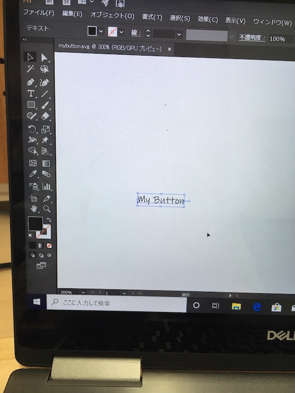

第一弾としてFUSION３６０で設計したデータをIllustratorで編集しレーザーカッターでカットしました。

手順はもうしばらくお待ちください
今週はジェネレーティブデザインについて調べました。
ジェネレーティブデザインについての記事こちら（最終閲覧２０１９年９月３０日）
上記のHPによるとジェネレーティブデザインのメリットは次の３つである。
１、設計の可能性を幅広く検討できる
自分が出した条件に掛け算で答えを出してくれる
２、従来は不可能だった設計が可能に
３、素材と製造法に合わせて最適化
実用化に生かされている例をHPで見ることができます。
こちらの記事でもジェネレーティブデザインについてのメリットが書いてある。
こちら（最終閲覧２０１９年９月３０日）
１、軽量化
２、パフォーマンスの向上
３、パーツの一体化
一方デメリットとしては
１、アイディアをそのまま生かすといよりは、人の経験でより良いデザインに仕上げていく必要がある。
２、形が複雑化するので加工が大変になる。
第二弾としてイラストレータのデータを立体にしました。


注意点としてはあまり複雑な線な重なりあっている線があると、エラーがでます。

左は重なり合っているので押し出し等の加工ができない。右はそれぞれ独立しているのでスムーズにできた。
データ変換のレシピをまとめる予定なのでもうしばらくお待ちください。
アイディア出しをしている段階。
穴等の固定の位置に制限があって、複雑すぎないテーマがないか探してます。
現在のところ、スマホケース関連、服のボタン、椅子を思いついています。
他の意見をゼミで聴きたい。
SLACKで紹介されていた本が図書室にあったので借りて読んでみました。
デザイン思考について書かれていた本でした。

デザイン思考では人の視点でものに取り組む必要がある。（p.37）
人々に共感をしてしっかり観察すことが大切だという。
観察をするのに役立つワークとして共感マップが役に立つという。（p.305）
doyolabフレームワーク・共感マップ
ものづくりをしてる人に是非この思考法の実践をオススメしたいとおもった一冊です。
人を観察したものづくりは矢田くんの研究で役に立つのではないだろうか？
保育器の例、MRIのデザインを変えて恐怖を和らげた例（最終閲覧２０１９年９月３０日）
また『行為のデザイン』もおすすめのデザインに関する本なので後日まとめたい。
FABLABの登場などにより、パーソナルなものづくりが可能になったことについて書いてある。(p.8)
・トム・ケリー、デイヴィッド・ケリー（2014）『クリエイティブ・マインドセット−想像力・好奇心・勇気が目覚める驚異の思考法-』日経BP社
・井庭祟（2019）『クリエイティブ・ラーニング-創造社会の学びと教育-』慶應義塾大学出版株式会社
こちらのサイトを見ながら操作の練習を行い、自分の思う通りの形を作れるよう学習中
Fusion 360 の基本操作 60 分間で学べる 12 本のチュートリアル
注意点としてはあまり複雑な線な重なりあっている線があると、エラーがでます。
左は重なり合っているので押し出し等の加工ができない。右はそれぞれ独立しているのでスムーズにできた。
データ変換のレシピをまとめる予定なのでもうしばらくお待ちください。
アイディア出しをしている段階。
穴等の固定の位置に制限があって、複雑すぎないテーマがないか探してます。
現在のところ、スマホケース関連、服のボタン、椅子を思いついています。
他の意見をゼミで聴きたい。
FUSIONを使って、データ作りの学習をしていた。
https://www.autodesk.co.jp/products/fusion-360/learn-training-tutorialsサイト
こちらにて基本操作をまなぶことが可能である。
日本語字幕あり
実践１のデータ
ダウンロード可
青色のクッキーの型を作成しました。
動画は操作の記録用なので、編集しておりませんのでご了承下さい。長いです
今回成功とは言えない仕上がりでした。
1回目の生成は１時間かかりました。条件が少なかったため。
2回目の生成は途中でストップしました。
条件を入れすぎたためです。
成功とは言えないのでデータ参考はあまり役に立たないかもしれません
プレビュー機能を使用するとある程度形を確認できる。
本日２生成５０クレジット使用。
参照
ジェネレーティブデザインのざっくりした手順
１、保持と障害の設定
保持ジオメトリとは、ネジ穴など残しておかないといけない部分です。例えば、他の部品と接続、嵌合（かんごう）するような箇所は、ソリッドモデル形状を作成して保持ジオメトリとして選択します。
障害物ジオメトリとは、空けておきたい領域、干渉しては困る領域のことです。自動車のタイヤなど、左右に動くようなパーツが周囲にある場合は、動く範囲を想定してソリッドモデルを作りましょう。
２、「荷重と拘束」を設定する
固定と力の流れ
３、材質の種類と製造方法を決める
４、計算結果から最適なものを選択する
５、CADデータにエクスポート
• クラウドクレジット－100パック：1万7280円（税込み）
• ジェネレーティブデザイン
計算1回：25クレジット
STL or スカルプトデータへのエクスポート：100クレジット
参照まとめ終わり
また下の公式にジェネレーティブの学習が乗っててあった
FUSION homepage
全面英文のためまだ解読が必要
これから手をつけていきたい。